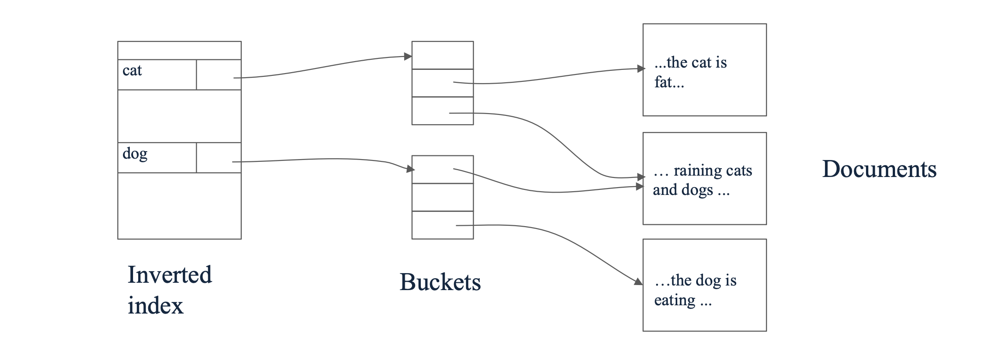
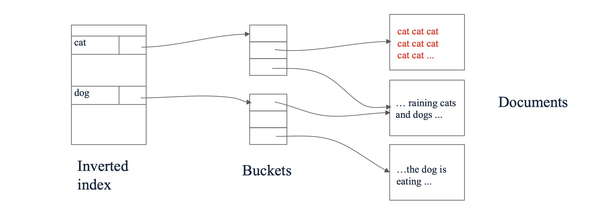
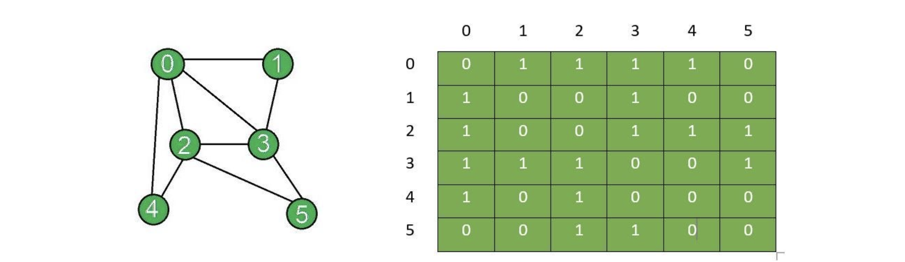

1. 서론: 웹 검색과 링크 분석(Link Analysis)
현대의 데이터 마이닝에서 그래프 마이닝(Graph Mining)은 데이터 내부의 연결성과 관계(Connections/Relationships)를 연구하는 매우 중요한 분야입니다. 그 중에서도 가장 대표적이고 성공적인 응용 사례가 바로 웹 검색(Web Search)입니다.
본 포스트에서는 검색 엔진이 사용자의 질의(Query)에 어떻게 응답하는지, 초기의 텍스트 기반 검색 방식이 가졌던 한계는 무엇인지, 그리고 이를 극복하기 위해 웹을 그래프(Graph)로 모델링하는 아이디어가 어떻게 등장했는지 살펴봅니다.
2. 웹 검색의 기본 구조와 역색인(Inverted Index)
- 웹 검색의 궁극적인 목표는 ‘사용자의 질의(Query)에 대해 가장 관련성 높은(relevant) 웹 페이지를 찾아 반환하는 것’입니다. 이를 위해 검색 엔진은 크게 두 가지 핵심 과정을 거칩니다.
- 색인(Indexing): 단어(Terms)를 해당 단어가 포함된 웹 페이지(Pages)에 매핑하는 역색인(Inverted Index) 구조를 구축합니다.
- 랭킹(Ranking): 검색된 페이지들을 해당 페이지의 ‘권위(Authority)’ 또는 ’신뢰도(Trust)’를 기준으로 정렬합니다.
- 웹 검색은 인터넷 규모의 방대한 데이터(Web-scale size)를 실시간으로 처리해야 하며, 스팸(Spam) 조작을 걸러내야 한다는 두 가지 주요한 과제를 안고 있습니다.
2.1 역색인(Inverted Index)의 원리
- 역색인은 웹 검색을 위한 가장 핵심적인 자료 구조입니다. 책의 맨 뒤에 있는 ’찾아보기(Index)’와 완전히 동일한 원리로 동작합니다.

검색 질의가 들어오면 검색 엔진은 모든 페이지를 처음부터 끝까지 스캔하는 것이 아니라, 역색인 테이블을 참조하여 해당 단어가 포함된 페이지들을 즉각적으로 추출합니다.
전통적인 정보 검색(Information Retrieval) 관점에서는 특정 단어가 페이지 내에서 더 자주 등장할수록(Term Frequency가 높을수록) 해당 페이지가 질의와 더 높은 관련성을 가진다고 판단했습니다.
2.2 역색인 방식의 치명적인 한계: 스팸 조작
- 단어의 등장 빈도에만 의존하는 방식은 악의적인 사용자(Unethical people)에 의해 매우 쉽게 조작될 수 있다는 치명적인 한계를 가집니다. 검색 엔진을 속이는 대표적인 수법은 다음과 같습니다.
- 보이지 않는 텍스트(Invisible Text) 삽입: 배경색과 동일한 색상으로 특정 키워드(예: ‘cat’)를 페이지 내에 수천 번 반복해서 적어 넣습니다.
- 사용자의 눈에는 보이지 않지만, 검색 엔진의 크롤러는 해당 페이지가 ’cat’이라는 키워드에 대해 엄청난 관련성(빈도)을 가진 문서라고 착각하게 됩니다.

- 이러한 조작(Spam manipulation)이 만연해지면서, 페이지 내부의 텍스트 콘텐츠(Content)만으로는 문서의 진정한 가치와 신뢰도를 평가할 수 없게 되었습니다.
3. 새로운 패러다임: 웹을 그래프(Graph)로 이해하기
텍스트 기반 랭킹의 한계를 극복하기 위한 근본적인 질문은 ‘어떻게 해야 진정으로 신뢰할 수 있는(trustful) 페이지를 정확하게 랭킹할 수 있을까?’였습니다.
그 해답은 웹 문서들이 서로 연결되어 있는 구조, 즉 하이퍼링크(Hyperlinks)에 있었습니다. 우리는 전체 웹을 하나의 거대한 그래프(Graph)로 모델링할 수 있습니다.
- 노드(Nodes): 각각의 웹 페이지
- 간선(Edges): 페이지 \(p_1\)에서 페이지 \(p_2\)로 향하는 하이퍼링크 (방향성 존재)
이 아이디어의 핵심 철학은 다음과 같습니다.
‘신뢰할 수 있고 유용한 페이지들은 자연스럽게 서로를 가리킬(point to) 것이다.’
- 누군가 다른 사람의 웹페이지로 링크를 건다는 것은 일종의 추천(Endorsement)이자 투표(Vote)로 해석할 수 있습니다. 텍스트는 조작하기 쉽지만, 전 세계의 수많은 사람들이 자발적으로 생성하는 하이퍼링크 구조는 조작하기가 훨씬 어렵습니다.

4. 그래프의 수학적 표현 (Mathematical Representation)
네트워크 분석과 머신러닝 알고리즘에 웹을 태우기 위해서는 이 거대한 그래프 구조를 수학적으로 명확하게 정의해야 합니다.
그래프 \(G\)는 \(n\)개의 노드(nodes)와 \(m\)개의 간선(edges)을 통해 객체들 간의 관계를 모델링합니다. 이를 컴퓨터가 효율적으로 처리하기 위해 일반적으로 인접 행렬(Adjacency Matrix) \(S\)를 사용합니다.
행렬 \(S\)의 크기는 \(n \times n\)이며, 각 원소 \(S_{ij}\)는 노드 \(i\)에서 노드 \(j\)로의 연결 여부를 나타냅니다. (행과 열의 인덱스가 0부터 시작한다고 가정합니다.)
4.1 인접 행렬의 종류와 희소성(Sparsity)
방향 그래프 (Directed Graph): 하이퍼링크처럼 방향이 있는 경우, 행렬 \(S\)는 비대칭 행렬(Asymmetric matrix)이 되며 비영원소(non-zeros)의 개수는 간선의 수인 \(m\)개입니다.
무방향 그래프 (Undirected Graph): 페이스북 친구 맺기처럼 양방향 관계인 경우, 행렬 \(S\)는 대칭 행렬(Symmetric matrix)이 되며 비영원소의 개수는 \(2m\)개가 됩니다.
실제 웹 환경에서는 \(n\)(페이지 수)이 수백억 개 이상에 달하지만, 한 페이지가 가지는 링크의 수는 보통 수십 개에 불과하므로 \(S\)는 0이 압도적으로 많은 희소 행렬(Sparse Matrix) 형태를 띱니다.
4.2 예시: 무방향 그래프의 인접 행렬 구성
- 다음과 같이 6개의 노드(0부터 5까지)를 가진 무방향 그래프가 주어졌다고 가정해 봅시다.

- 위 그림의 연결 상태를 기반으로 \(6 \times 6\) 대칭 인접 행렬 \(S\)를 수학적으로 표현하면 다음과 같습니다. 무방향 그래프이므로 \(S_{ij} = S_{ji}\)가 성립하며, 자기 자신으로의 연결이 없다면 대각 원소는 모두 0이 됩니다.
\[S=\begin{bmatrix}0&1&1&1&1&0\\1&0&0&1&0&0\\1&0&0&1&1&1\\1&1&1&0&0&1\\1&0&1&0&0&0\\0&0&1&1&0&0\end{bmatrix}\]
- 예를 들어, 노드 0은 1, 2, 3, 4번 노드와 연결되어 있으므로 첫 번째 행(Row 0)은
[0, 1, 1, 1, 1, 0]이 됩니다.
5. 그래프 마이닝의 다양한 응용 (Applications)
- 데이터 마이닝 관점에서 그래프는 단지 웹 검색(PageRank)을 위해서만 존재하는 것이 아닙니다. 개체 간의 상호작용이 존재하는 곳이라면 어디든 그래프 분석을 적용할 수 있습니다.
- 소셜 네트워크 분석 (Social Network Analysis): 페이스북, 인스타그램 등에서 사용자 간의 친구 관계나 팔로우 관계를 분석하여 커뮤니티를 발견하고 인플루언서를 찾습니다.
- 추천 시스템 (Recommender Systems): 사용자와 상품(또는 영화 등)을 이분 그래프(Bipartite Graph)로 연결하여, 사용자가 선호할 만한 새로운 항목을 추천합니다.
- 네트워크 및 통신 (Communication & Routing): 공유기(Routers) 및 도메인 간의 네트워크 패킷 전송 구조를 최적화하여 병목 현상을 해결합니다.
- 교통 최적화 (Transportation Optimization): 도로망을 노드와 간선으로 모델링하여 최적 경로 안내와 교통 흐름을 분석합니다.
- 생물정보학 (Bioinformatics): 단백질 상호작용 네트워크(Protein interaction networks)를 모델링하여 유전적 질병의 원인을 찾거나 신약을 개발합니다.